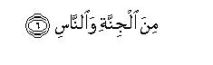

بسم الله الرحمن الرحيم
Sayyid Abul Ala Maududi - Tafhim al-Qur'an - The Meaning of the Qur'an
 114.
Surah An Nas (Mankind)
114.
Surah An Nas (Mankind)
Please note that the following introduction is for both Surah Al Falaq (113) and Surah An Nas (114).
Although these two Surahs of the Qur'an are separate entities and are written in the Mushaf also under separate names, yet they are so deeply related mutually and their contents so closely resemble each other's that they have been designated by a common name Mu'awwidhatayn (the two Surahs in which refuge with Allah has been sought). Imam Baihaqi in Dala'il an-Nubuwwat has written that these Surahs were revealed together, that is why the combined name of both is Mu'awwidhatayn. We are writing the same one Introduction to both, for they discuss and deal with just the same matters and topics. However, they will be explained and commented on separately below.
Hadrat Hasan Basri, 'Ikrimah, 'Ata' and Jabir bin Zaid say that these Surahs are Makki. A tradition from Hadrat 'Abdullah bin 'Abbas also supports the same view. However, according to another tradition from him, it is Madani and the same view is held also by Hadrat 'Abdullah bin Zubair and Qatadah. One of the traditions which strengthens this second view is the Hadith which Muslim, Tirmidhi, Nasa'i and Imam Ahmad bin Hanbal have related on the authority of Hadrat 'Uqbah bin 'Amir. He says that the Holy Prophet (upon whom be peach) one day said to him: "Do you know what kind of verses have been revealed to me tonight? These matchless verses are A'udhu bi-Rabbil-falaq and A'udhu bi-Rabbin-nas. This Hadith is used as an argument for these Surahs to be Madani because Hadrat 'Uqbah bin 'Amir had become a Muslim in Madinah after the hijrah, as related by Abu Da'ud and Nasa'i on the basis of his own statement. Other traditions which have lent strength to this view are those related by Ibn Sa'd, Muhiyy-us-Sunnah Baghawi, Imam Nasafi, Imam Baihaqi, Hafiz Ibn Hajar, Hafiz Badr-uddin 'Ayni, 'Abd bin Humaid and others to the effect that these Surahs were revealed when the Jews had worked magic on the Holy Prophet (upon whom be peace) in Madinah and he had fallen ill under its effect. Ibn Sa'd has related on the authority of Waqidi that this happened in A.H. 7. On this very basis Sufyan bin Uyainah also has described these Surah as Madani.
But as we have explained in the Introduction to Surah Al-Ikhlas, when it is said about a certain Surah or verse that it was revealed on this or that particular occasion, it does not necessarily mean that it was revealed for the first time on that very occasion. Rather it sometimes so happened that a Surah or a verse had previously been revealed, then on the occurrence or appearance of a particular incident or situation, the Holy Prophet's attention was drawn to it by Allah for the second time, or even again and again. In our opinion the same also was the case with the Mu'awwidhatayn. The subject matter of these Surahs is explicit that these were sent down at Makkah in the first instance when opposition to the Holy Prophet there had grown very intense. Later, when at Madinah storms of opposition were raised by the hypocrites, Jews and polytheists, the Holy Prophet was instructed to recite these very Surahs, as has been mentioned in the above cited tradition from Hadrat Uqbah bin Amir. After this, when magic was worked on him, and his illness grew intense, Gabriel came and instructed him by Allah's command to recite these very Surahs. Therefore, in our opinion, the view held by the commentators who describe both these Surahs as Makki is more reliable. Regarding them as connected exclusively with the incident of magic is difficult, for to this incident related only one verse (v.4), the remaining verses of Surah al Falaq and the whole of Surah An-Nas have nothing to do with it directly.
The conditions under which these two Surahs were sent down in Makkah were as follows. As soon as the Holy Prophet (upon whom be peace) began to preach the message of Islam, it seemed as though he had provoked all classes of the people around him. As his message spread the opposition of the disbelieving Quraish also became more and more intense. As long as they had any hope that they would be able to prevent him from preaching his message by throwing some temptation in his way, or striking some bargain with him, their hostility did not become very active. But when the Holy Prophet disappointed them completely that he would not effect any kind of compromise with them in the matter of faith, and in Surah Al-Kafirun they were plainly told: "I do not worship those who you worship nor are you worshipers of Him Whom I worship. For you is your religion and for me is mine", the hostility touched its extreme limits. More particularly, the families whose members (men or women, boys or girls) had accepted Islam, were burning with rage from within against the Holy Prophet. They were cursing him, holding secret consultations to kill him quietly in the dark of the night so that the Bani Hashim could not discover the murderer and take revenge; magic and charms were being worked on him so as to cause his death, or make him fall ill, or become mad; satans from among the men and the jinn spread on every side so as to whisper one or another evil into the hearts of the people against him and the Qur'an brought by him so that they became suspicious of him and fled him. There were many people who were burning with jealousy against him, for they could not tolerate that a man from another family or clan than their own should flourish and become prominent. For instance, the reason why Abu Jahl was crossing every limit in his hostility to him has been explained by himself: "We and the Bani Abdi Manaf (to which the Holy Prophet belonged) were rivals of each other: they fed others, we too fed others; they provided conveyances to the people, we too did the same; they gave donations, we too gave donations, so much so that when they and we have become equal in honor and nobility, they now proclaim that they have a Prophet who is inspired from the heaven; how can we compete with them in this field? By God, we will never acknowledge him, nor affirm faith in him". (Ibn Hisham, vol. I, pp. 337-338).
Such were the conditions when the Holy Prophet (upon whom be peace) was commanded to tell the people: "I seek refuge with the Lord of the dawn, from the evil of everything that He has created, and from the evil of the darkness of night and from the evil of magicians, men and women, and from the evil of the envious", and to tell them: "I seek refuge with the Lord of mankind, the King of mankind, and the Deity of mankind, from the evil of the whisperer, who returns over and over again, who whispers (evil) into the hearts of men, whether he be from among the jinn or men." This is similar to what the Prophet Moses had been told to say when Pharaoh had expressed his design before his full court to kill him: "I have taken refuge with my Lord and your Lord against every arrogant person who does not believe in the Day of Reckoning." (Al-Mu'min: 27). And: "I have taken refuge with my Lord and your Lord lest you should assail me." (Ad-Dukhan;20).
On both occasions these illustrious Prophets of Allah were confronted with well-equipped, resourceful and powerful enemies. On both occasions they stood firm on their message of Truth against their strong opponents, whereas they had no material power on the strength of which they could fight them, and on both occasions they utterly disregarded the threats and dangerous plans and hostile devices of the enemy, saying: "We have taken refuge with the Lord of the universe against you." Obviously, such firmness and steadfastness can be shown only by the person who has the conviction that the power of His Lord is the supreme power, that all powers of the world are insignificant against Him, and that no one can harm the one who has taken His refuge. Only such a one can say: "I will not give up preaching the Word of Truth. I care the least for what you may say or do, for I have taken refuge with my Lord and your Lord and Lord of all universe."
The above discussion is enough to help one understand fully the theme and content of the two Surahs, but since three points in the books of Hadith and commentary concerning these Surahs have been discussed, which are likely to create doubts in the minds, it is necessary to clear them also here.
First, whether it is absolutely established that these two Surahs are the Qur'anic Surahs, or whether there is some doubt in this regard. This question arose because in the traditions related from an illustrious Companion like Hadrat Abdullah bin Mas'ud, it has been said that he did not regard these two Surahs as the Surahs of the Qur'an and had eliminated these from his copy of the Mushaf. Imam Ahmad, Bazzar, Tabarani, Ibn Marduyah, Abu Ya'la, Abdullah bin Ahmad bin Hanbal, Humaydi, Abu Nu'aim, Ibn Hibban and other traditionists have related this from Hadrat Abdullah bin Mas'ud with different chains of transmitters and mostly on sound authority. According to these traditions, he not only eliminated these Surahs from the Mushaf but it has also been reported that he used to say: "Do not mix up with the Qur'an that which is not of the Qur'an. These two Surahs are not included in the Quran. This was only a command enjoined on the Holy Prophet (upon whom be peace) for seeking God's refuge." In some traditions there is also the addition that he did not recite these Surahs in the Prayer.
On the basis of these traditions the opponents of Islam had an opportunity to raise doubts about the Qur'an, saying that this Book, God forbid, is not free from corruption. For when, according to a Companion of the rank of Hadrat Abdullah bin Mas'ud, these two Surahs are an annexation to the Qur'an, many other additions and subtractions also might have been made in it. To rid the Qur'an of this blame Qadi Abu Bakr Al-Baqillani, Qadi Iyad and others took the stand that Ibn Mas'ud was not in fact a denier of the Mu'awwidhatayn being Qur'anic but only refused to write them in the Mushaf. For, according to him, only that which the Holy Prophet (upon whom be peace) had allowed, should be written in the Mushaf, and Ibn Mas'ud did not receive the information that the Holy Prophet had allowed this. But this stand is not correct, for according to sound evidence, it is confirmed that Ibn Mas'ud (may Allah be pleased with him) had denied that these were Surahs of the Qur'an. Some other scholars, for instance, Imam Nawawi, Imam Ibn Hazm and Imam Fakhr-ud-din Razi, regard this as a pure lie and falsehood that Ibn Mas'ud had asserted any such thing. But to reject genuine historical facts without sound evidence is unscientific.
Now, the question is: How can the blame that attaches to the Qur'an because of these traditions of Ibn Mas'ud correctly refuted? This question has several answers which we shall give below in sequence:
Hafiz Bazzar after relating these traditions of Ibn Mas'ud in his Musnad, has written that he is solitary and isolated in his this opinion; no one from among the Companions has supported this view.
The copies of the Qur'an which the third Caliph, Hadrat Uthman (may Allah be pleased with him), had got compiled by the consensus of the Companions and which he had sent from the Islamic Caliphate officially to the centers of the world of Islam contained both these Surahs.
The Mushaf which, since the sacred time of the Holy Prophet (upon whom be peace) till today, has the seal of consensus of the entire world of Islam, contains both these Surahs. The solitary opinion of only Abdullah bin Mas'ud, in spite of his high rank, has no weight against this great consensus.
It is confirmed by sound and reliable ahadith from the Holy Prophet (upon whom be peace) that he not only recited these Surahs in the Prayer himself but instructed others also to recite them, and taught them to the people as the Surahs of the Qur'an. Consider, for instance, the following ahadith:
We have cited on the authority of Muslim, Ahmad, Tirmidhi and Nasai the tradition of Hadrat Uqbah bin Amir that the Holy Prophet told him about Surah Al-Falaq and Surah An- Nas, saying that those verses had been revealed to him that night. A tradition in Nasai from Uqbah bin Amir is to the effect that the Holy Prophet (upon whom be peace) recited both these Surahs in the Morning Prayer. Imam Ahmad on sound authority has related in his Musnad the tradition from a Companion that the Holy Prophet said to him, "When you perform the Prayer, recite both these Surahs in it."
In Musnad Ahmad, Abu Daud and Nasai this tradition of Uqbah bin Amir has been related: "The Holy Prophet said to him: Should I not teach you two such Surahs as are among the best Surahs that the people recite? He said: Do teach me, O Messenger of Allah. Thereupon the Holy Prophet taught him the Mu'awwidhatayn. Then the Prayer began and the Holy Prophet recited the same two Surahs in it also, and when after the Prayer the Holy Prophet passed by him, he said to him, 'O Uqbah, how did you like it?' Then he instructed him to the effect: When you go to bed, and when you get up from bed, recite these Surahs."
In Musnad Ahmad, Abu Da'ud, Tirmidhi and Nasa'i there is a tradition from Uqbah bin Amir, saying that the Holy Prophet exhorted him to recite the Mu'awwidhat (i.e. Qul Huwa Allahu ahad and the Mu'awwidhatayn) after every Prayer.
Nasai, Ibn Marduyah and Hakim have related this tradition also from Uqbah bin Amir: "Once the Holy Prophet was riding on a conveyance and I was walking along with him with my hand placed on his sacred foot. I said: Kindly teach me Surah Hud or Surah Yusuf. He replied: In the sight of Allah there is nothing more beneficial for the servant than Qul a'udhu bi-Rabbil-falaq."
A tradition from Abdullah bin Abid al-Juhani has been related by Nasai, Baihaqi and Ibn Sad, saying that the Holy Prophet said to him: "Ibn Abid, should I not tell you what are the best things out of the means by which the seekers of refuge have sought refuge with Allah? I submitted: Do teach me, O Messenger of Allah. He replied: Qul a'udhu bi-Rabbil- falaq and Qul a-udhu bi Rabbin-nas - both these Surahs."
Ibn Marduyah had related from Hadrat Umm Salamah: "The Surahs best liked by Allah are: Qul a'udhu bi-Rabbil-falaq and Qul a'udhu bi-Rabbin-nas."
Here, the question arises: what caused Hadrat Abdullah bin Mas'ud the misunderstanding that these two are not Surahs of the Qur'an? We get the answer to it when we combine two traditions: first, that Hadrat Abdullah bin Mas'ud asserted that this was only a command which the Holy Prophet (upon whom be peace) was given to teach him the method of seeking refuge with Allah; second, the tradition which Imam Bukhari has related in his Sahih, Imam Ahmad in his Musnad, Hafiz Abu Bakr al- Humaidi in his Musnad, Abu Nu'aim in his Al-Mustakhraj and Nasai in his Sunan, with different chains of transmitters, on the authority of Zirr bin Hubaish, with a slight variation in wording from Hadrat Ubayy bin Kab, who held a distinguished place among the Companions on the basis of his knowledge of the Qur'an. Zirr bin Hubaish states: "I said to Hadrat Ubayy: Your brother, Abdullah bin Mas'ud, says these things. What do you say about this view? He replied: I had questioned the Holy Prophet (upon whom be peace) about this. He said to me: I was told to say 'qul', so I said 'qul'. Therefore, we too say the same as the Holy Prophet said."
In the tradition related by Imam Ahmad, Hadrat Ubayy's words are to the effect: "I bear witness that the Holy Prophet (upon whom be peace) told me that Gabriel (peace be on him) had told him to say: Qul a'udhu bi-Rabbil-falaq; therefore, he recited likewise, and Gabriel asked him to say: Qul a'udhu bi- Rabbin-nas; therefore he too said likewise. Hence, we too say as the Holy Prophet said." A little consideration of these two traditions will show that the word qul (say) in the two Surahs caused Hadrat Abdullah bin Mas'ud the misunderstanding that the Holy Prophet (upon whom be peace) had been commanded to say: A'udhu bi-Rabbil-falaq and A'udhu bi-Rabbin-nas. But he did not feel any need to question the Holy Prophet about it. In the mind of Hadrat Ubbay bin Kab also a question arose about his and he put it before the Holy Prophet. The Holy Prophet replied: "Since Gabriel (peace be on him) had said qul, so I too say qul." Let us put it like this. If somebody is commanded and asked: "Say, I seek refuge", he will not carry out the command, saying: "Say, I seek refuge", but he will drop the work "say" and say: "I seek refuge." On the contrary, if the messenger of a superior officer conveys to somebody the message in these words: "Say, I seek refuge", and this command is given to him not only for his own person but to be conveyed to others, he will convey the words of the message verbatim to the people, and will not have the permission to drop anything from the text of the message. Thus, the fact that these two Surahs begin with the word qul is a clear proof that it is Divine Word, which the Holy Prophet (upon whom be peace) was bound to convey verbatim. It was not merely a command given to him for his person. Besides these two Surahs, there are 330 other verses in the Qur'an which begin with the word qul (say). The presence of qul in all these is a proof that it is Divine Word. which was obligatory for the Holy Prophet to convey verbatim; otherwise if qul everywhere had meant a command, the Holy Prophet would have dropped it and said only that which he was commanded to say, and it would not have been recorded in the Qur'an, but, on the contrary, he would have remained content with saying only what he was commanded to say.
Here, if one considers this, one can understand fully well how unreasonable it is to regard the Companions as infallible and to make the clamor that a Companion has been defamed as soon as one hears a saying or doing of his being described as wrong. Here, one can clearly see what a blunder happened to be committed by an illustrious Companion like Hadrat Abdullah bin Mas'ud about two Surahs of the Qur'an. If such an error could be committed by an eminent Companion like him, others also might commit an error. We can examine it in the scientific way, and describe it as wrong if a thing said or done by a Companion is proved to be wrong. But wicked indeed would be the person who went beyond describing a wrong act as wrong and started reproving and finding fault with the Companions of the Holy Prophet of Allah. Concerning the Mu'awwidhatayn the commentators and traditionists have described the opinion of Ibn Mas'ud as wrong, but no one has dared to say that by denying these two Surahs of the Qur'an, he had, God forbid, become a disbeliever.
The second thing that has arisen in respect of these two Surahs is that, according to traditions, magic had been worked on the Holy Prophet, and he had fallen ill under its effect, and Gabriel (peace be on him) had instructed him to repeat these Surahs to remove the charm. This has been objected to by many rationalists of both ancient and modern times. They say that if these traditions are accepted, the whole Shari'ah becomes doubtful. For if the Prophet could be charmed, and according to these traditions he was charmed, one cannot say what the Prophet might have been made to say and do under the influence of magic by his opponents, and what in his teaching may be Divine and what the result of magic. Not only this: they also allege that if this is accepted as true, it might well be that the Prophet might have been prompted to make the claim to Prophethood through magic and the Prophet by misunderstanding might have thought that an angel had come to him. They also argue that these traditions clash with the Qur'an. The Qur'an mentions the accusation of the disbelievers who said that the Prophet was bewitched (Bani Isra'il: 47), but these traditions confirm the accusation of the disbelievers that the Prophet had actually been charmed and bewitched.
For a proper investigation of this question it is necessary that one should first see whether it is established by authentic historical evidence that the Holy Prophet (upon whom be peace) had actually been affected by magic, and if so, what it was and to what extent. Then it should be seen whether the objections raised against what is established historically do actually apply to it or not.
The Muslim scholars of the earliest period were truly honest and upright in that they did not try to corrupt history or conceal facts according to their own ideas, concepts and assumptions. They conveyed intact to the later generations whatever was confirmed historically, and did not at all care how the material supplied by them could be used by the one who was bent upon drawing perverse conclusions from the facts. Now, if something stands confirmed by authentic and historical means, it is neither right for an honest and right-minded person that he should deny history on the ground that in case he accepted it, it would lead to these evil results according to his thinking, nor it is right that he should add to and stretch beyond its genuine limits by conjecture and speculation whatever is established historically. Instead, he should accept history as history and then see what is actually proved by it and what is not.
As far as the historical aspect is concerned, the incident of the Holy Prophet's being affected by magic is absolutely confirmed, and if it can be refuted by scientific criticism, then no historical event of the world can be proved right and genuine. It has been related by Bukhari, Muslim, Nasai, Ibn Majah, Imam Ahmad, Abdur Razzaq, Humaidi, Baihaqi, Tabarani, Ibn Sad, Ibn Mardayah, Ibn Abi Shaibah, Hakim, Abd bin Humaid and other traditionists on the authority of Hadrat Aishah, Hadrat Zaid bin Arqam and Hadrat Abdullah bin Abbas, through so many different and numerous channels that forgery is out of the question. Although each tradition by itself is an isolated report (khabar wahid), we give it below as a connected event from the details provided by the traditions.
After the peace treaty of Hudaibiyah when the Holy Prophet (upon whom be peace) returned to Madinah, a deputation of the Jews of Khaibar visited Madinah in Muharram, A.H. 7 and met a famous magician, Labid bin Asam, who belonged to the Ansar tribe of Bani Zurayq. They said to him: "You know how Muhammad (upon whom be Allah's peace and blessings) has treated us. We have tried our best to bewitch him but have not succeeded. Now we have come to you because you are a more skilled magician. Here are three gold coins, accept these and cast a powerful magic spell on Muhammad." In those days the Holy Prophet had a Jewish boy as his attendant. Through him they obtained a piece of the Holy Prophet's comb with some hair stuck to it. Magic was worked on the same hair and the teeth of the comb. According to some traditions, magic was worked by Labid bin Asam himself, according to others, his sisters were more skilled than him and he got the spell cast through them. Whatever be the case, Labid placed this spell in the spathe of a male date-tree and his it under a stone at the bottom of Dharwan or Dhi Arwan, the well of Bani Zurayq. The spell took one whole year to have effect upon the Holy Prophet (upon whom be peace). In the latter half of the year the Holy Prophet started feeling as if was unwell. The last forty days became hard on him, of which the last three days were even harder. But its maximum effect on him was that he way melting away from within. He thought he had done a thing whereas, in fact, he had not done it: he thought he had visited his wives whereas he had not visited them; and sometimes he would doubt having seen something whereas, in fact, he had not seen it. All these effects were confined to his own person; so much so that the other people could not notice what state he was passing through. As for his being a Prophet, no change occurred in the performance of his duties.
There is no tradition to say that he might have forgotten some verses of the Qur'an in those days, or might have recited a verse wrongly, or a change might have occurred in the assemblies and in his counsels and sermons, or he might have presented a discourse as Revelation which may not have been revealed to him, or he might have missed a Prayer and thought that he had performed it. God forbid, if any such thing had happened, it would have caused a clamor and the whole of Arabia would have known that a magician had overpowered the one whom no power had been able to overpower. But the Holy Prophet's position as a Prophet remained wholly unaffected by it. Only in his personal life he remained worried on account of it. At last, one day when he was in the house of Hadrat Aishah, he prayed to Allah to be restored to full health. In the meantime he fell asleep or drowsed and on waking he said to Hadrat Aishah: "My Lord has told me what I had asked of Him." Hadrat Aishah asked what it was. He replied: "Two men (i.e. two angels in human guise) came to me. One sat near my head and the other near my feet. The first asked: what has happened to him? The other replied: Magic has been worked on him. The first asked: who has worked it? He replied: Labid bin Asam. He asked: In what is it contained? He replied: In the comb and hair covered in the spathe of a male date-tree. He asked: where is it? He replied: under a stone at the bottom of Dhi Arwan (or Dharwan), the well of Bani Zurayq. He asked: what should be done about it? He replied: the well should be emptied and it should be taken out from under the stone. The Holy Prophet then sent Hadrat Ali, Hadrat Ammar bin Yasir and Hadrat Zubair: They were also joined by Jubair bin Iyas az-Zurqi (two men from Bani Zurayq). Later the Holy Prophet also arrived at the well along with some Companions. The water was taken out and the spathe recovered. There they found that beside the comb and hair there was a cord with eleven knots on it and a wax image with needles pricked into it. Gabriel (peace be on him) came and told him to repeat the Mu'awwidhatayn. As he repeated verse after verse, a knot was loosened and a needle taken out every time, till on finishing the last words all the knots were loosened and all the needles removed, and he was entirely freed from the charm. After this he called Labid and questioned him. He confessed his guilt and the Holy Prophet let him go, for he never avenged himself on anyone for any harm done to his person. He even declined to talk about it to others, saying that Allah had restored him to health; therefore he did not like that he should incite the people against anyone.
This is the story of the magic worked on the Holy Prophet. There if nothing in it which might run counter to his office of Prophethood. In his personal capacity if any injury could be inflicted on him as it happened in the Battle of Uhud, if he could fall from his horse and be hurt as is confirmed by the Hadith, if he could be stung by a scorpion as has been mentioned in some Traditions and none of these negates the protection promised him by Allah in his capacity as a Prophet, he could also fall ill under the influence of magic in his personal capacity. That a Prophet can be affected by magic is also confirmed by the Qur'an. In Surah Al- A'raf it has been said about the magicians of Pharaoh that when they confronted the Prophet Moses, they bewitched the eyes of thousands of people who had assembled to witness the encounter (v. 116). In Surah Ta Ha it has been said that not only the common people but the Prophet Moses too felt that the cords and staffs that they cast were running towards them like so many snakes, and this filled Moses' heart with fear. Thereupon Allah revealed to him: "Don't fear for you will come out victorious. Cast down you staff." (vv. 66-69). As for the objection that this then confirms the accusation of the disbelievers of Makkah that the Holy Prophet (upon whom be peace) was a bewitched man, its answer is that the disbelievers did not call him a bewitched man in the sense that he had fallen ill under that effect of magic cast by somebody, but in the sense that some magician has, God forbid, made him mad, and he had made claim to Prophethood and was telling the people tales of Hell and Heaven in his same madness. Now, obviously this objection does not at all apply to a matter about which history confirms that the magic spell had affected only the person of Muhammad (upon whom be peace) and not the Prophethood of Muhammad (upon whom be peace), which remained wholly unaffected by it.
In this connection, another thing worthy of mention is that the people who regard magic as a kind of superstition hold this view only because the effect of magic cannot be explained scientifically. But there are many things in the world which one experiences and observes but one cannot explain scientifically how they happen. If we cannot give any such explanation it does not become necessary that we should deny the thing itself which we cannot explain. Magic, in fact, is a psychological phenomenon which can affect the body through the mind just as physical things affect the mind through the body. Fear, for instance, is a psychological phenomenon, but it affects the body: the hair stand on end and the body shudders. Magic does not; in fact, change the reality, but under its influence man's mind and senses start feeling as if reality had changed. The staffs and the cords that the magicians had thrown towards the Prophet Moses, had not actually become snakes, but the eyes of the multitude of people were so bewitched that everybody felt they were snakes; even the senses of the Prophet Moses could not remain unaffected by the magic spell. Likewise, in Al-Baqarah: 102, it has been said that in Babylon people learned such magic from Harut and Marut as could cause division between husband and wife. This too was a psychological phenomenon. Obviously, if the people did not find it efficacious by experience they could not become its customers. No doubt, it is correct that just like the bullet of the rifle and the bomb from the aircraft, magic too cannot have effect without Allah's permission, but it would be mere stubbornness to deny a thing which has been experienced and observed by man for thousands for years.
The third thing that arises in connection with these Surahs is whether recitation of charms and amulets has any place in Islam, and whether such recitation is by itself efficacious or not. This question arises for in many ahadith it has been reported that the Holy Prophet (upon whom be peace) at the time of going to bed every night, especially during illness, used to recite the Mu'awwidhatayn (or according to other reports, the Mu'awwidhat, i.e. Qul Huwa-Allahu Ahad and the Mu'awwidhatayn) thrice, blow in his hands and then rub the hands on his body from head to foot as far as his hands could reach. During his last illness when it was not longer possible for him to so do, Hadrat Aishah recited these Surahs herself or by his command blew on his hands in view of their being blessed and rubbed them on his body. Traditions on this subject have been related in Bukhari, Muslim, Nasai, Ibn Majah, Abu Da'ud and Mu'atta of Imam Malik through authentic channels on the authority of Hadrat Aishah herself beside whom no one could be better acquainted with the domestic life of the Holy Prophet.
In this regard, one should first understand its religious aspect. In the Hadith a lengthy tradition has been related on the authority of Hadrat Abdullah bin Abbas, at the end of which the Holy Prophet is reported to have said: "The people of my Ummah to enter Paradise without reckoning will be those who neither turn to treatment by branding, nor to enchanting, nor take omens, but have trust in their Lord." (Muslim). According to a tradition reported on the authority of Hadrat Mughirah bin Shubah, the Holy Prophet said: "He who got himself treated by branding, or enchanting, became independent of trust in Allah." (Tirmidhi). Hadrat Abdullah bin Mas'ud has reported that the Holy Prophet disapproved of ten things one of which was recitation of charms and amulets except by means of the Mu'awwidhatayn or Mu'awwidhat. (Abu Daud, Ahmad, Nasai, Ibn Hibban, Hakim). Some ahadith also show that in the beginning the Holy Prophet had altogether forbidden recitation of charms and amulets, but later he allowed it on the condition that is should not smack of polytheism, but one should recite and blow by means of the holy names of Allah, or the words of the Qur'an. The words used should be understandable and one should know that there is nothing sinful in it, and one should not wholly rely on the recitation of charms but on Allah's will to make it beneficial." After the explanation of the religious aspect, let us now see what the Hadith says in this regard.
Tabarani in As-Saghir has related a tradition on the authority of Hadrat Ali, saying: "One the Holy Prophet was stung by a scorpion during the Prayer. When the Prayer was over, he remarked: God's curse be on the scorpion: it neither spares a praying one, nor any other. Then he called for water and salt, and started rubbing the place where the scorpion had stung with salt water and reciting Qul ya ayyuhal-kafirun, Qul Huwa Allahu ahad, Qul a'udhu bi-Rabbil-falaq and Qul a'udhu bi-Rabbin-nas, along with it."
Ibn Abbas also has related a tradition to the effect: "The Holy Prophet (upon whom be peace) used to recite this invocation over Hadrat Hasan and Husain: U'idhu kuma bi-kalimat Allahit-tamati min kulli shaitan-in wa hammati-wa min kulli ayt-in-lam nati: "I give you in the refuge of Allah's blameless words, from every devil and troublesome thing, and from every evil look." (Bukhari, Musnad Ahmad, Tirmidhi, Ibn Majah).
A tradition has been related in Muslim, Muwatta, Tabarani and Hakim about Uthman bin al-As ath-Thaqafi, with a little variation in wording, to the effect that he complained to the Holy Prophet (upon whom be peace), saying: "Since I have become a Muslim, I feel a pain in my body, which is killing me." The Holy Prophet said: "Place your right hand on the place where you feel the pain, then recite Bismillah thrice, and A'udhu billahi wa qudratihi min sharri ma ajidu wa uhadhiru ("I seek refuge with Allah and with His power from the evil that I find and that I fear") seven times, and rub your hand." In Muwatta there is the addition: "Uthman bin Abi al-As said: After that my pain disappeared and now I teach the same formula to the people of my house."
Musnad Ahmad and Tahavi contain this tradition from Talq bin Ali: "I was stung by a scorpion in the presence of the Holy Prophet (upon whom be peace). The Holy Prophet recited something and blew over me and rubbed his hand on the affected place."
Muslim contains a tradition from Abu Said Khudri, which says: "Once when the Holy Prophet (upon whom be peace) fell ill, Gabriel came and asked: O Muhammad, are you ill? The Holy Prophet answered in the affirmative. Gabriel said: I blow on you in the name of Allah from everything which troubles you and from the evil of every soul and the evil look of every envier. May Allah restore you to health. I blow on you in His name." A similar tradition has been related in Musnad Ahmad on the authority of Hadrat Ubadah bin as-Samit, which says: "The Holy Prophet was unwell. I went to visit him and found him in great trouble. When I re-visited him in the evening I found him quite well. When I asked how he had become well so soon, he said: Gabriel came and blew over me with some words. Then he recited words similar to those reported in the above Hadith. A tradition similar to this has been related on the authority of Hadrat Aishah also in Muslim and Musnad Ahmad.
Imam Ahmad in his Musnad has related this tradition from Hafsah, mother of the Faithful: "One day the Holy Prophet (upon whom be peace) visited me in the house and a woman, named Shifa, was sitting with me. She used to blow on the people to cure them of blisters. The Holy Prophet said to her: Teach Hafsah also the formula." Imam Ahmad, Abu Daud and Nasai have related this tradition from Shifa bint Abdullah herself, saying: "The Holy Prophet said to me: Just as you have taught Hafsah reading and writing, so teach her blowing to cure blisters as well."
In Muslim there is a tradition from Auf bin Malik al-Ashjal to the effect: "We used to practice blowing to cure diseases. We asked the Holy Prophet (upon whom be peace) for his opinion in this regard. He said: Let me know the words with which you blow over the people. There is no harm in blowing unless it smacks of polytheism."
Muslim, Musnad Ahmad and Ibn Majah contain a tradition from Hadrat Jabir bin Abdullah, saying: "The Holy Prophet (upon whom be peace) had forbidden us blowing to cure disease. Then the people of the clan of Hadrat Amr bin Hazm came and they said: We had a formula with which we used to blow on the people to cure them of scorpion's sting (or snake-bite). But you have forbidden us the practice. Then they recited before him the words which they made use of. Thereupon the Holy Prophet said: I do not see any harm in it, so let the one who can do good to his brother, do him good." Another tradition from Jabir bin Abdullah in Muslim is: "The family of Hazm had a formula to cure snake-bite and the Holy Prophet permitted them to practise it." This is also supported by the tradition from Hadrat Aishah, which is contained in Muslim, Musnad Ahmad, and Ibn Majah: "The Holy Prophet granted permission to a family of the Ansar for blowing to cure the evils effects of biting by every poisonous creature." Traditions resembling these have been related from Hadrat Anas also in Musnad Ahmad, Tirmidhi, Muslim and Ibn Majah, saying that the Holy Prophet gave permission for blowing to cure the bite by poisonous creatures, the disease of blisters and the effects of the evil look."
Musnad Ahmad, Tirmidhi, Ibn Majah and Hakim have related this tradition on the authority of Hadrat Umair, freed slave of Abi al-Laham: "In the pre-Islamic days I had a formula with which I used to blow over the people. I recited it before the Holy Prophet, whereupon he told me to drop out such and such words from it, and permitted me to blow with the rest of it."
According to Muwatta, Hadrat Abu Bakr went to the house of his daughter, Hadrat Aishah, and found that she was unwell and a Jewish woman was blowing over her. Thereupon he said to her: "Blow over her by means of the Book of Allah." This shows that if the people of the Book practice blowing by means of the verses of the Torah and the Gospel, it is also permitted.
As for the question whether blowing for curing disease is efficacious also, or not, its answer is that the Holy Prophet (upon whom be peace) not only did not forbid anybody to have recourse to cure and medical treatment but himself stated that Allah has created a cure for every disease and exhorted his followers to use cures. He himself told the people the remedies for certain diseases, as can be seen in the Hadith in the Kitab at-Tib (Book of Cures). But the cure can be beneficial and useful only by Allah's command and permission, otherwise if the cure and medical treatment were beneficial in every case, no one would have died in hospitals. Now, if beside the cure and medical treatment, Allah's Word and His beautiful names also are made use of, or Word and His beautiful names also are made use of, or Allah is turned to and invoked for help by means of His Word, Names and Attributes in a place where no medical aid is available, it would not be against reason except for the materialists. However, it is not right to disregard intentionally a cure or treatment where it is available, and recourse had only to enchanting and reciting of charms, and the people should start a regular practice of granting amulets as a means of earning their livelihood.
Many people in this regard argue from Hadrat Abu Said Khudri's tradition which has been related in Bukhari, Muslim, Tirmidhi, Musnad Ahmad, Abu Daud and Ibn Majah, and it is supported also by a tradition related in Bukhari on the authority of Ibn Abbas. According to it the Holy Prophet sent some of his Companions including Hadrat Abu Said Khudri on an expedition. They halted on the way at the settlement of an Arabian tribe and demanded hospitality from the people, but they refused to extend any hospitality. In the meantime the chief of the tribe was stung by a scorpion and the people came to the travelers to ask if they had any medicine or formula by which their chief could be cured. Hadrat Abu Said said: "Yes, we do have, but since you have refused us hospitality, we would not treat him unless you promised us to give us something." They promised to give them a flock of goats (according to some traditions, 30 goats), and Hadrat Abu Said went and started reciting Surah Al-Fatihah and rubbing his saliva on the affected place. Consequently, the chief felt relieved of the effect of the poison and the people of the tribe gave them the goats as promised. But the Companions said to one another; "Let us not make any use of the goats until we have asked the Holy Prophet about it", for they were not sure whether it was permissible to accept any reward for what they had done. So they came before the Holy Prophet and related what had happened. The Holy Prophet smiled and said: "How did you know that Surah Al-Fatihah could also be used for curing such troubles? Take the goats and allocate my share also in it."
But before one used this Hadith for permission to adopt a regular profession of granting amulets and reciting charms, one should keep in view the conditions under which Hadrat Abu Said Khudri had recourse to it, and the Holy Prophet not only held it as permissible but also said that a share for him also should be allocated so that there remained no doubt in the minds of the Companions that such a thing was permissible. The conditions in Arabia in those days were, as they still are, that settlements were situated hundreds of miles apart, there were not hotels and restaurants where a traveler could buy food when he reached one of these after several days journey. Under such conditions it was considered a moral duty that when a traveler reached a settlement the people of the place should extend hospitality to him. Refusal on their part in many cases meant death for the travelers, and this was looked upon as highly blameworthy among the Arabs. That is why the Holy Prophet (upon whom be peace) allowed as permissible the act of his Companions. Since the people of the tribe had refused them hospitality, they too refused to treat their chief, and became ready to treat him only on the condition that they should promise to give them something in return. Then, when one of them with trust in God recited Surah Al-Fatihah over the chief and he became well, the people gave the promised wages and the Holy Prophet allowed that the wages be accepted as lawful and pure. In Bukhari the tradition related on the authority of Hadrat Abdullah bin Abbas about this incident contains the Holy Prophet's words to the effect: "Instead that you should have acted otherwise, it was better that you recited the Book of Allah and accepted the wages for it." He said this in order to impress the truth that Allah's Word is superior to every other kind of enchanting and practice of secret arts. Furthermore, the Message also was incidentally conveyed to the Arabian tribe and its people made aware of the blessings of the Word that the Holy Prophet (upon whom be peace) had brought from Allah. This incident cannot be cited as a precedent for the people who run clinic in the cities and towns for the practice of secret arts and have adopted it as a regular profession for earning livelihood. No precedent of it is found in the life and practice of the Holy Prophet (upon whom be peace) or his Companions, their followers and the earliest Imams.
The last thing which is note worthy with regard to the Mu'awwidhatayn is the relation between the beginning and the end of the Qur'an. Although the Qur'an has not been arranged chronologically, the Holy Prophet (upon whom be peace) arranged in the present order the verses and Surahs revealed during 23 years on different occasions to meet different needs and situations not by himself but by the command of Allah Who revealed them. According to this order, the Qur'an opens with the Surah Al-Fatihah and ends with the Mu'awwidhatayn. Now, let us have a look at the two. In the beginning, after praising and glorifying Allah, Who is Lord of the worlds, Kind, Merciful and Master of the Judgment Day, the servants submits: "Lord, You alone I worship and to You along I turn for help, and the most urgent help that I need from You is to be guided to the Straight Way." In answer, he is given by Allah the whole Qur'an to show him the Straight Way, which is concluded thus: Man prays to Allah, Who is Lord of dawn, Lord of men, King of men, Deity of men, saying: "I seek refuge only with You for protection from every evil and mischief of every creature, and in particular, from the evil whisperings of devils, be they from among men or jinn, for they are the greatest obstacle in following the Straight Way." The relation that the beginning bears with the end, cannot remain hidden from anyone who has understanding and insight.

In the name of Allah, the Compassionate, the Merciful.

[1-6] Say: "I seek refuge with the Lord of mankind, the King of mankind, the real God of mankind,1 from the evil of the whisperer, who returns over and over again,2 who whispers (evil) into the hearts of men, whether he be from among the jinn or mankind."3
1Here also, as in Surah Al-Falaq, instead of saying A'udhu-billahi (I seek Allah's refuge), a prayer has beat taught to seek Allah's refuge by reference to His throe attributes: first, that He is Rabb-un nas, i.e. Sustainer, Providence and Master of all mankind; third, that He is Ilah-un-nas, i.e. real Deity of all mankind, (Here, one should clearly understand that the word ilah has been used in two meanings in the Qur'an: first for the thing or person who is practically being worshiped although it or he is not entitled to worship; second, for Him Who is ' entitled to worship, Who is in fact the Deity whether the people worship Him or not, wherever this word is used for Allah; it has been used in the second meaning). Seeking refuge by means of these throe attributes means: "I seek refuge with that God, Who being the Sustainer, King and Deity of men, has full power over them, can fully protect them and can really save them from the evil, to save myself and others from which 1 am seeking His refuge. Not only this: since He alone is Sustainer, King and Deity, therefore, there is no one beside Him with Whom I may seek refuge and he may give real refuge."
2The word waswas in waswas-il-khannas means the one who whispers over and over again, and waswasa means to whisper into someone's heart an evil suggestion over and over again in such a way or ways that the one who is being inspired may not feel that the whisperer is whispering an evil suggestion into his heart. Waswasah by itself suggests repetition just as zalzalah contains the meaning of repetitive movement. Since man is not tempted by just one attempt but effort has to be made over and over again to seduce and tempt him, such all attempt is called waswasah and the tempter waswas. As for the word khannas, it is derived from khunus, which means to hide after appearing and to retreat after coming into view. Since khannas is the intensive form, it would imply the one who behaves thus very frequently. Now, obviously the whisperer has to approach man for whispering again and again, and besides, when he is also described as khannas, the combination of the two words by 'itself gives the meaning that after whispering once he retreats and then again returns over and over again to repeat the act of whispering. In other words, when once he fails in his attempt to whisper evil, he withdraws, then he again returns to make the second and the third and the next attempt over and over again.
After understanding the meaning of waswas-il-khannas, let us consider what is meant by seeking refuge from its evil. Its one meaning is that the seeker after refuge himself seeks God's refuge from its evil, i.e. from the evil lest it should whisper some evil suggestion into his own heart. The second meaning is that the caller to Truth seeks God's refuge from the evil of the one who whispers evil suggestions into the hearts of the people against himself. It is not in his own power to approach all the people in whose hearts evil suggestions are being whispered against himself individually and remove the misunderstandings of every person. It is also not right and proper for him that he should give up his mission of inviting others to Allah and should devote all his tune and energy to removing the misunderstanding created by the whisperer and to answering their accusations. It is also below his dignity that he should stoop to the level of his opponents. Therefore, Allah has instructed the caller to Truth to seek only His refuge from the evil of the wicked people, and then to attend single-mindedly to his work of invitation and mission. For it is not for him to deal with them but for Allah, who is Sustainer of men, King of,men, God of men.
Here, one should also understand that an evil suggestion is the starting , point of evil act. When it affects a careless or heedless person, it creates in him a desire for evil. Then, further whisperings change the evil desire into an evil intention and evil purpose. When the evil suggestion grows in intensity, the intention becomes a resolution, which then culminates in the evil act. Therefore, the meaning of seeking God's refuge from the evil of the whisperer is that Allah should nip the evil in the bud.
If seen from another aspect, the order of the evil of the whisperers seems to be this: first. they incite one to open unbelief, polytheism, or rebellion against Allah and His Messenger, and enmity of the righteous (godly) people. If they fail in this and a person does enter Allah's religion, they misguide him to some innovation. If they fail in this too, they tempt him to sin. If they do not succeed even in this, they inspire the man with the suggestion that there is no harm in indulging in minor sins, so that if he starts committing these freely, he is over burdened with sin. If one escapes from this too, in the last resort they try that one should keep the true religion confined to oneself, and should do nothing to make it prevail, but if a person defeats all these plans, the whole party of the devils froth among men and jinn makes a common front against him incites and stirs up the people and makes them shower him with invective and accusation and slander, and defames him as widely as it can. Then, Satan comes to the believer and excites him to anger, saying: "It is cowardly of you to have borne all this insult: arise and clash with your opponents." This is the last and final device with Satan by which he tries to thwart the struggle of the caller to Truth and entangle him in difficulties and obstructions. If he succeeds in escaping from this too, Satan becomes powerless before him. About this same thing it has been said in the Qur'an: "If Satan ever excites you to anger, seek refuge with Allah." (Al-A`raf: 200, Ha Mim As-Sajdah: 36);
"Say: Lord, I seek refuge with You from the promptings of satans." (Al-Mu'minun: 97);
"The fact is that if ever an evil suggestion from Satan so much as touches those, who are God-fearing people, they immediately get alerted and clearly see the right course they should adopt." (AI-A`raf: 201).
And on this very basis about the people who escape from this last attack of Satan Allah says: "None can attain to this rank except those who are men of great good fortune." (Ha Mim As-Sajdah: 35).
In this connection, another thing also should be kept in mind, and it is this: EviL suggestion is not whispered into the heart of man only from outside by the satans from among men and jinn, but also by the self of man from within. His own wrong theories misguide his intellect, his own unlawful motives and desires lead his power of discrimination, will and power of judgment astray, and it is not only the satans from outside but within tnan his satan of the self also beguiles him. This same thing has been expressed in the Qur'an, thus: "and We know the evil suggestions arising from his self." (Qaf : 16). On this very basis, the Holy Prophet (upon whom be peace) in his well-known Sermon said: "We seek Allah's refuge from the evils of our self."
3According to some scholars, these words mean that the whisperer whispers evil into the hearts of two kinds of people: the jinn and the men. If this meaning is admitted, the word nas would apply to both jinn and men. They say that this can be so, for when the word rijali (men) in the Qur'an has been used for the jinn, as in Al-Jinn: 6, and when nafar can be used for the group of jinn, as in A1-Ahqaf: 29, men and jinn both can be included metaphorically in the word nas also. But this view is wrong because the words nas, ins and ihsan are even lexically contrary in meaning to the word jinn. The actual meaning of jinn is hidden creation and jinn is called jinn because he is hidden from man's eye. On the contrary, the words nas and ins are spoken for insan (man) only on the basis that he is manifest and visible and perceptible. In Surah Al-Qasas: 29, the word anasa has been used in the meaning of ra a, i.e. "the Prophet Moses saw a fire in the direction of Tur. " In Surah An-Nisa': 6, the word anastum has been used in the meaning of ahsastum or ra aytum (i.e. if you perceive or see that the orphans have become capable). Therefore, nas cannot apply to jinn lexically, and the correct meaning of the verse is: "from the evil of the whisperer who whispers evil into the hearts of men, whether he be from among the jinn or from the men themselves." In other words, whispering of evil is done by devils from among jinn as well as by devils from among rnen and the prayer in this Surah has been taught to seek refuge from the evil of both. This meaning is supported by the Qur'an as well as by the Hadith. The Qur'an says: "And so it has always been that We set against every Prophet enemies from among devils of men and devils of jinn, who have been inspiring one another with charming things to delude the minds." (Al-An'am :112)
And in the Hadith, lmam Ahmad, Nasa'i, and Ibn Hibban have related on the authority of Hadrat Abu Dharr a tradition, saying: "I sat before the Holy Prophet (upon whom be peace), who was in the Mosque. He said: Abu Dharr, have you performed the Prayer? I replied in the negative. He said: Arise and perform the Prayer. So, I performed the Prayer. The Holy Prophet said: O Abu Dharr, seek Allah's refuge from the devils of men and the devils of jinn. I asked. are there devils among men also? O Messenger of Allah! He replied: Yes."